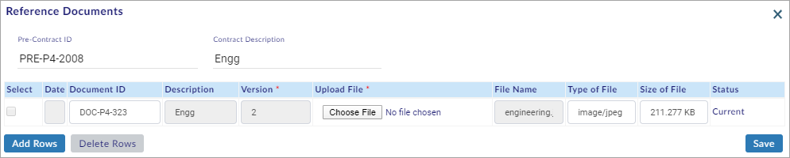

Procurement is the process of purchasing goods or services. The procurement process involves six phases i.e. Pre-Contract List, Stage 1 Request, Stage 1 Approval, RFQ (Request For Quotation), Stage 2 Request, Stage 2 Approval and Generate Purchase Order(s).
Pre-Contract List is the Initial Phase in the Procurement Process. Pre Contract ID Plays a major role in further stages (i.e. acts as a Reference).
You can perform the following in the Pre-Contract List Section:
- Search the Pre-Contract List
- Create a New Pre-Contract
- Edit the Pre-Contract
- Deactivate the Pre-Contract
- Add the Reference Documents
Search Pre-Contract List:
This section helps you to search the created pre-contract list.
To search the created pre-contract list, do the following.
- Select the EPS ID/Name or Project ID/Name and the Enterprise Projects window opens as shown in the figure.

- On the Enterprise Projects window, select the project and click
 .
. - Select From Date and To date.
- Select Login User Records to search the records of the logged-in user (or select All User Records to search the records of all the users).
- Click Search available on the right side of the screen.
- The search results are shown on the screen as shown in the figure.
Note:
- Already created Pre-contracts are available on the search results, without performing a search.
- Pre-contracts not available for given search criteria warning message is shown, if Pre-contracts are not available for the selected project or date range. Create a New Pre-Contract (See the Create New Pre-Contract Section below).
- Login User Records is selected by default.
- To Date is the current date and From Date is one month before the current date by default.
- Click Reset to reset the screen to the default view.
You have successfully searched the pre-contract list.
Create New Pre-Contract:
This section helps you to create a new pre-contract.
To create a new pre-contract, do the following.
- Search the pre-contract list. (See the Search Pre-Contract List Section above)
- Click
 and the Add Pre-Contracts window opens as shown in the figure.
and the Add Pre-Contracts window opens as shown in the figure.
- On the Add Pre-Contracts window, enter/select all the mandatory fields.
- Click
 to save the pre-contract details.
to save the pre-contract details.
Note:
- Click
 to create Single/Multiple Pre-Contract(s).
to create Single/Multiple Pre-Contract(s). - Select the Pre-Contract(s) and click
 to delete Single/Multiple Pre-Contract(s).
to delete Single/Multiple Pre-Contract(s).
You have successfully created a new pre-contract.
Edit Pre-Contract:
This section helps you to edit the pre-contract.
To edit the pre-contract, do the following.
- Search the pre-contract list. (See the Search Pre-Contract List Section above)
- Select the record you need to edit and click
 .
. - The Edit Pre-Contracts window opens as shown in the figure.
- Edit the pre-contract details.
- Click
 to save the edited pre-contract details.
to save the edited pre-contract details.
You have successfully edited the pre-contract details.
This section helps you to deactivate a pre-contract.
To deactivate a pre-contract, do the following.
- Search the pre-contract list. (See the Search Pre-Contract List Section above)
- Select the pre-contract you need to deactivate and click
 .
. - A Warning window opens.
- Click
 if you want to deactivate.
if you want to deactivate. - A confirmation Info window opens.
You have successfully deactivated the pre-contract.
Note:
- On the Warning window, click
 if you do not want to deactivate the pre-contract.
if you do not want to deactivate the pre-contract.
Add Reference Documents:
This section helps you to add thereference documents.
To add the reference documents, do the following.
- Search the pre-contract list. (See the Search Pre-Contract List Section above)
- Click
 and the Reference Documents window opens as shown in the figure.
and the Reference Documents window opens as shown in the figure.

- Click
 to create Single/Multiple Reference Document(s).
to create Single/Multiple Reference Document(s). - Enter Description and Version.
- Click
 to choose the document from your computer.
to choose the document from your computer. - Click
 to save the Reference Document(s).
to save the Reference Document(s).
Note:
- Select the Reference Document(s) and click
 to delete Single/Multiple Reference Document(s).
to delete Single/Multiple Reference Document(s).
You have successfully added the reference documents.
Created with the Personal Edition of HelpNDoc: Generate Kindle eBooks with ease